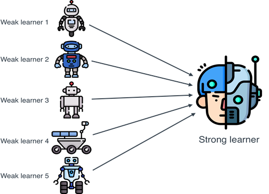
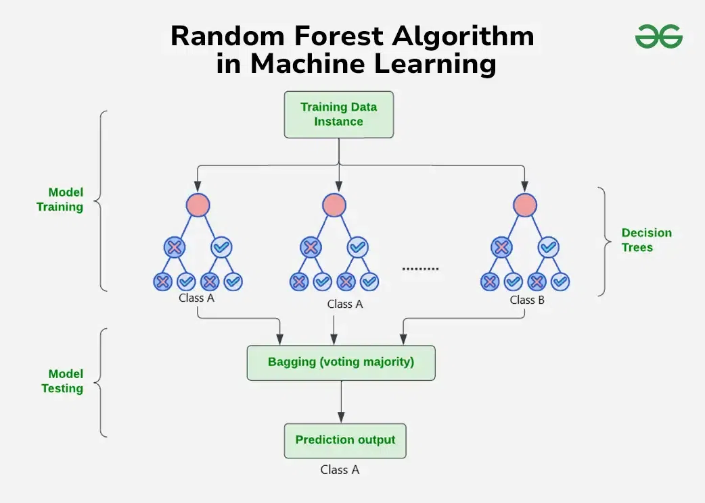
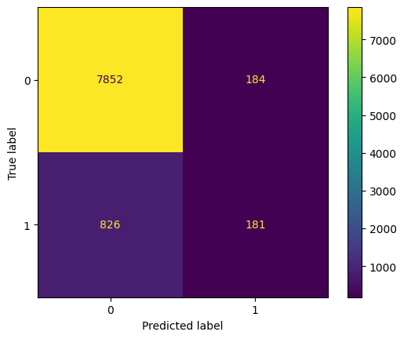

Ensemble learning is a machine learning approach where multiple models (often called "weak learners") are combined to produce a stronger overall model. Instead of relying on a single model to make predictions, ensemble methods merge the outputs of several models to improve accuracy, stability, and robustness. The main idea is that while one model might make mistakes, combining many models can cancel out individual errors and lead to better overall performance. Common ensemble techniques include bagging (like Random Forest), boosting (like AdaBoost and XGBoost), stacking, and voting. Ensemble learning is widely used because it often achieves better results than any single model alone, especially on complex or noisy datasets.

What is Random Forest?
Random Forest is an ensemble machine learning method that builds many decision trees during training and combines their outputs to make a final prediction. Each tree is trained on a random subset of the data (bagging) and uses random subsets of features at each split, making the trees different from one another. When it’s time to predict, the forest takes a majority vote (for classification) or an average (for regression) across all trees. This randomness helps Random Forest models to be more accurate, more stable, and less likely to overfit compared to a single decision tree.
The Random Forest algorithm builds multiple decision trees during the training phase, each trained on random subsets of the data and features. Every tree makes its own prediction, and during testing, the model uses a voting system where the majority prediction across all trees becomes the final output. This bagging technique helps to reduce variance, improve stability, and prevent overfitting compared to using a single decision tree. The image above visually represents this process, showing how multiple decision trees work independently and combine their results to produce a stronger overall prediction.

Why Random Forest is Used Here?
Random Forest is used in this project because it handles complex, real-world data very well without much preprocessing or tuning. It can naturally deal with both numerical and categorical features, handle missing values, balance class imbalance (using class_weight='balanced'), and reduce overfitting by averaging many different trees. Since the project involves predicting outcomes based on many client, financial, and marketing variables, Random Forest is a strong choice to create a reliable, robust, and high-performing model without being overly sensitive to noisy or imbalanced data.
Random Forest can handle both numerical and categorical data, but in practice, categorical variables must be encoded as numbers (like using label encoding or one-hot encoding) before training. It does not require feature scaling (normalization or standardization) and can handle a mix of variable types easily. However, the data should have no missing values—any missing entries should be filled or removed beforehand, since Random Forest models like those in scikit-learn cannot automatically handle NaNs. Random Forest is very flexible but expects clean, fully numeric inputs.
The project involved preparing the dataset by removing unnecessary columns such as duration, pdays, contact, month, and day_of_week, which were either potential data leakage sources or less informative for the prediction task. All categorical variables were converted into numeric format to meet the input requirements of Random Forest. Binary columns like housing, loan, default, and y were mapped to 0 and 1, while other categorical features such as job, marital, education, and poutcome were label-encoded.
After preprocessing, the data was split into features and target variables and then divided into training and testing sets using an 80-20 split. The cleaned full dataset, as well as the combined training and testing datasets, were saved into separate CSV files for future modeling. A Random Forest classifier was then trained using the training set, and its performance was evaluated on the testing set using a confusion matrix, accuracy score, and classification report to assess the effectiveness of the model.
To evaluate the performance of the Random Forest model, the cleaned dataset was divided into a training set and a testing set using an 80-20 split. The training set, consisting of 80% of the data, was used to fit the model and learn patterns, while the testing set, containing the remaining 20%, was used to assess how well the model generalized to unseen data. Splitting the data in this way helped to prevent overfitting and provided an unbiased estimate of the model’s accuracy and predictive capabilities on new, real-world examples.
Importance of Keeping Sets Disjoint
Keeping the training and testing sets completely disjoint is essential to ensure that the model is evaluated fairly and accurately. If the same data points appear in both the training and testing sets, the model may simply memorize the answers instead of learning meaningful patterns, leading to artificially high performance metrics. By maintaining a strict separation, the testing set truly represents unseen data, allowing for an honest assessment of the model’s ability to generalize to new, real-world situations.
The confusion matrix shows that the model correctly classified 7,852 instances of class 0 and 181 instances of class 1, while it misclassified 184 instances of class 0 as class 1 and 826 instances of class 1 as class 0. This indicates that the model performs well in identifying class 0 but struggles more with correctly predicting class 1, resulting in a higher number of false negatives. While the Random Forest model demonstrates strong performance in detecting the majority class, there is room for improvement in sensitivity toward the minority class.

Classification Report
The Random Forest model achieved an overall accuracy of 88.8%, correctly classifying most of the samples. For class 0, the model showed very high performance with a precision of 0.90, recall of 0.98, and f1-score of 0.94, indicating that it accurately and consistently identified the majority class. However, for class 1, the model struggled, achieving only 0.50 precision and 0.18 recall, resulting in a low f1-score of 0.26, meaning it often failed to correctly detect instances of the minority class. The macro-averaged scores reflect this imbalance, with a lower macro f1-score of 0.60, while the weighted average remains higher at 0.86, influenced by the dominance of class 0 in the dataset.
The Random Forest model showed strong overall performance, correctly predicting whether customers would subscribe to a term deposit about 89% of the time. It was especially good at identifying customers who were unlikely to subscribe, making very few mistakes in this group. This suggests that the model is reliable when it comes to recognizing customers who are not interested, which can help save marketing efforts and focus resources more effectively.
However, the model had difficulty identifying customers who would actually subscribe. It missed a significant number of potential subscribers, meaning it may not be as effective when the goal is to target and convince interested customers. Improving the model to better detect this smaller group would help make marketing campaigns more successful by reaching the right people at the right time.
CONCLUSION
The Random Forest analysis revealed several important patterns influencing customer subscription behavior. Longer call durations were positively linked with successful outcomes, emphasizing the value of maintaining engaging conversations during marketing calls. Customers who had positive experiences in previous campaigns were more likely to subscribe again, highlighting the importance of building and sustaining strong customer relationships.
Additionally, direct contact methods, especially telephone calls, proved more effective than other channels in driving customer engagement. Seasonal trends were also observed, with campaigns conducted during months like May and August achieving higher success rates, suggesting that the timing of outreach plays a crucial role in campaign performance.